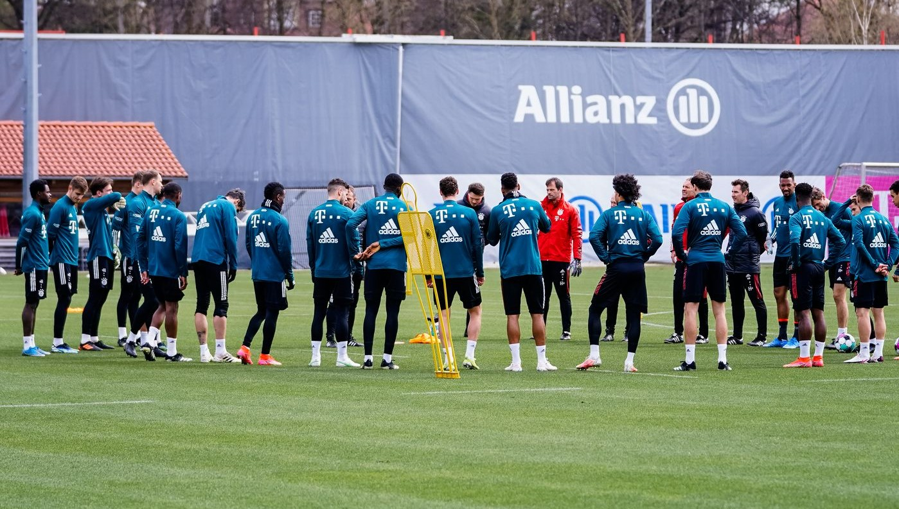

Bayern start the preparation on the lawn

It's time to get back to business as the new season approaches.
After the first Bayern players completed their obligatory medical
and performance tests at the weekend, a group including Sven Ulreich,
Dayot Upamecano and new signing Ryan Gravenberch finally took to the pitch
at Säbener Straße as the Bundesliga champions completed their first training
session of 2022/23 pre-season, although without some international players, who
have a few more days off after representing their countries in June.